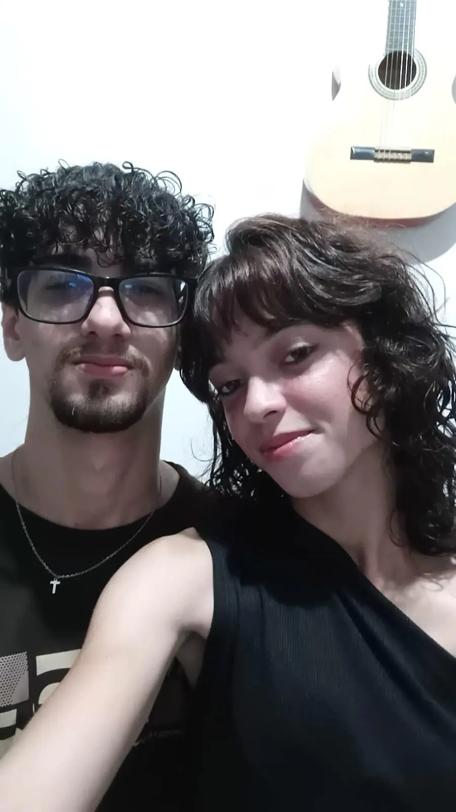

ATO 1
Primeiro gostaria que você entrasse no link que vou anexar aqui antes de ler o resto do texto, acho que vc vai gostar da surpresa hihihihih.
Nesses 1 ano e 10 meses que estivemos juntos passamos por muitas coisas,momentos bons,momentos ruins, mas nunca faltou afeto/compreensão/carinho e vontade de ir além nesse relacionamento,criamos sonhos e metas juntos, pode acreditar, quero realizar todos eles com você meu amor, só tenho a te agradecer, por me ensinar como amar alguém de verdade, agradeço por sempre está ao meu lado em todos os momentos, por aguentar as minhas chatices e o principal, obrigado por ser VOCÊ. Agora vou te deixar curtir as outras páginas do site, aproveite meu amor e siga todas as instruções que estou te passando meu amor. EU TE AMO MINHA ESPOSA!!
